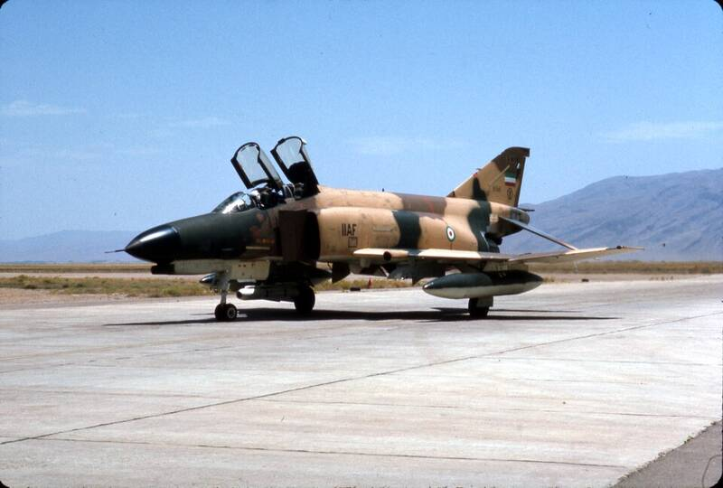

Tehran UFO incident
Iran, 1976

On September 19, 1976, two Imperial Iranian Air Force F-4 jets chased a bright object, and crews reported instrument and weapons failures as they closed in. A U.S. Defense Intelligence Agency memo called it a classic case. 1
Open in the interactive Watcher
Related
Sources
- 1976 Tehran UFO incident Wikipedia